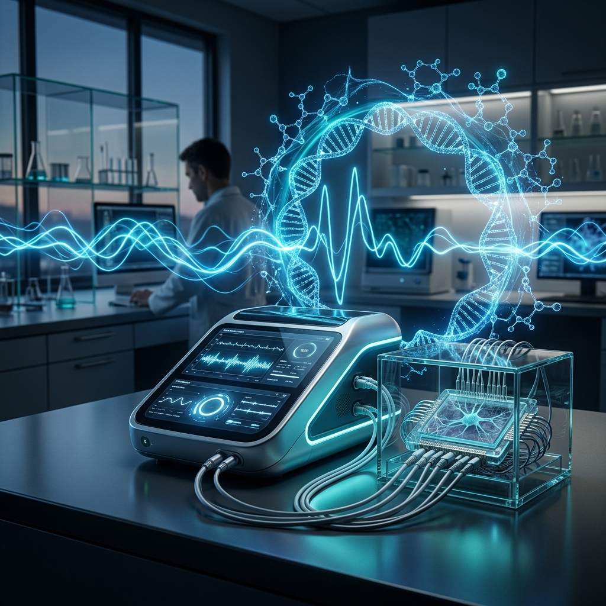

Capturing the molecular dynamics of life. Pulsomix enables high-integrity EBiopsy for oncology research, biobanking, and drug discovery without destroying the source.
Time-series analysis: Collect multiple samples from the exact same spot at different time points. Monitor tumor evolution and treatment response in real-time within the same model.
Area-wide analysis: Collect a high density of samples from the same area simultaneously. Map molecular heterogeneity across the tissue interface with unprecedented precision.
Quality first: Achieve RIN scores ≥ 8.0. Extract pure RNA, proteins, and metabolites suitable for advanced NGS and Mass Spec analysis without mechanical degradation.
Current oncology research relies on destructive biopsies. Researchers get a single "snapshot" at the time of sacrifice, missing the critical dynamics of drug resistance.
Mechanical biopsies often destroy the sample or provide low yield. Researchers are forced to choose between high-quality data and keeping the model alive.
Longitudinal studies require massive cohorts because models are sacrificed at each point. This leads to high costs and biological "noise".

The Pulsomix Precision Bio-Sampler (PBS) leverages proprietary mild-pulse protocols to create transient pores in cell membranes. This allows internal molecules (RNA, proteins, lipids) to be extracted while maintaining cell viability and tissue structure.
RNA Integrity Number (RIN) Score
Non-Destructive for Longitudinal Studies
The "brain" of the system. A reusable capital equipment featuring real-time impedance monitoring and adaptive waveform control for reproducible sampling across diverse tissue types.
Single-use, high-precision arrays designed for minimal invasiveness. Features integrated micro-fluidic collection for immediate stabilization of sensitive molecular profiles.
Proprietary algorithms that translate raw molecular yields into actionable biological signatures, optimized for NGS and Mass Spec pipelines.
Monitor tumor response to therapy in real-time. Track the emergence of resistance markers in the same PDX model or organoid over weeks.
Standardized QC for tissue repositories. "Taste" the molecular profile of a sample before cryopreservation without compromising its integrity for future clinical use.
Senior Member of the National Academy of Inventors (NAI). Expert in Medical Informatics & Bioinformatics.
Leading expert in Bio-engineering and Electroporation technologies.
Decades of experience in medical device R&D and hardware engineering.
Head of Plastic Surgery, Meir Medical Center. Clinical Oncology Researcher.
We are currently collaborating with leading pharma companies and academic sites.
Inquire About Beta Access